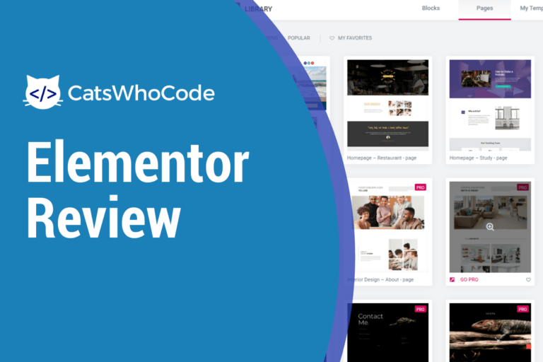
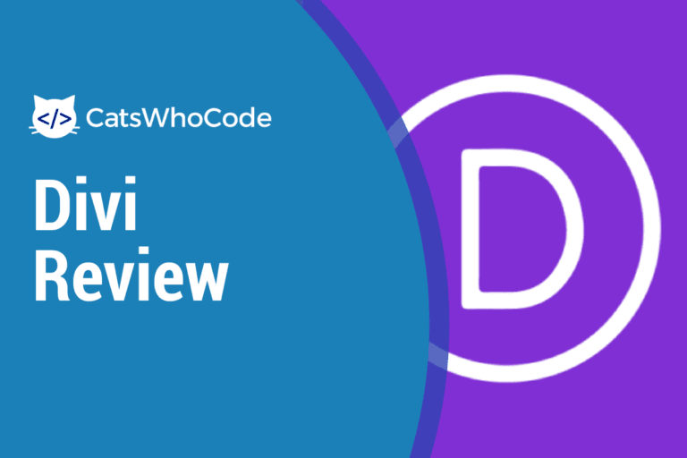
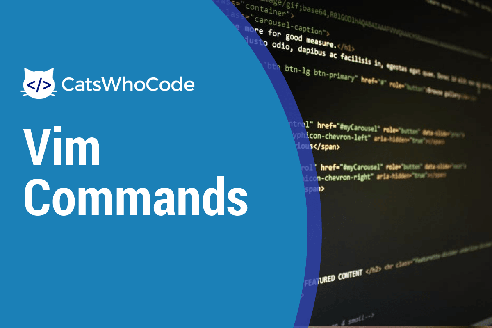
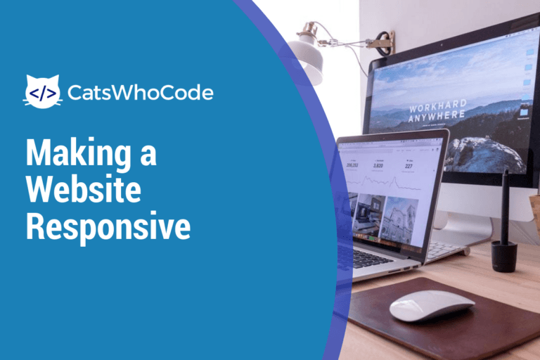
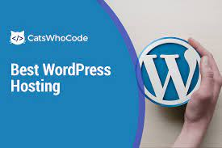
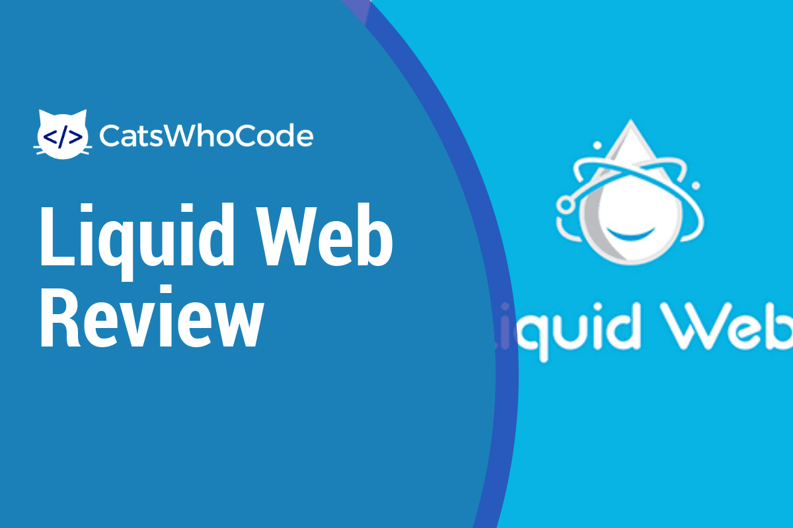
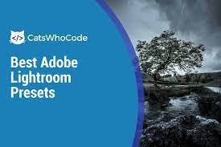

Elementor Review 2020: WordPress üçün ən yaxşı səhifə qurucusu?
WordPress səhifə yaradıcıları bir müddətdir mövcuddur. Bunlar arasında Elementor ən populyar
inşaatçılardan biridir və CatsWhoCode daxil olmaqla minlərlə WordPress saytı tərəfindən
istifadə olunur. Amma
Ən Yaxşı Ucuz Veb Hosting Xidmətləri nəzərdən keçirildi və müqayisə edildi
Hər hansı bir veb sayt və ya veb tətbiq üçün veb hosting tələb olunur. Təəssüf ki, hosting
şirkətləri bəzən bahalı ola bilər. Digər tərəfdən, çox ucuz hosting keyfiyyət baxımından nadir
hallarda təmin edir,

Divi İncelemesi:WordPress üçün ən yaxşı mövzu və səhifə qurucusudur?
Bu Divi icmalı, məşhur WordPress mövzusunun və səhifə yaradıcısının incəliklərini geniş
şəkildə əhatə edəcəkdir. Divi WordPress Teması ən çox istifadə edilənlərdən biridir
Top 50 Son Model Phyton Siyahısı
Python proqramlaşdırma dilini həqiqətən sevdiyim bir şey onun inanılmaz genişlənməsidir.
Python üçün demək olar ki, bütün ehtiyacları əhatə edən 50 zəhmli modulun siyahısı: Verilənlər
bazaları, GUI'lər, Şəkillər,
Ultimate Vim Cheat Sheet: Vim'i Pro kimi istifadə etməyi öyrənin
1970-ci illərdən bəri, Vi və Vim inkişaf etdiricilər arasında populyardır və əksər UNIX əsaslı
serverlərdə mövcuddur. Bu pulsuz və açıq mənbəli modal mətn redaktorları bir az çətin ola
bilər

130+ əsas Vim əmrləri
1970-ci illərdən bəri, Vi və onun varisi Vim, demək olar ki, bütün GNU / Linux dağıtımları da
daxil olmaqla bir çox əməliyyat sisteminə daxil edilmişdir. Vim pulsuz və açıq mənbəlidir və
biridir

3 Asan addımda cavab verən bir veb sayt necə qurulur
Bu gün bir veb sayt yalnız masa üstü ekranında deyil, tablet və smartfonlarda da yaxşı
görünməməlidir. Veb sayt uyğunlaşmağı bacarırsa cavab verir
7 Sadə Mərhələdə Peşəkar Veb İnkişaf etdiricisi Olmaq
Fikir verin, bu uğurlu veb saytın arxasında beyin olacaqsınız, 2 milyarddan çox istifadəçi
üçün ən yaxşı istifadəçi təcrübəsini yarada bilərsiniz. Həm də veb saytlar buradadır

Ən yaxşı WordPress Hosting Xidmətləri Xülasəsi: Dərin Bələdçi
WordPress'i əsasən PHP və MySQL təmin edən hər hansı bir hosting mühitinə qurmaq asan olsa da,
saytınızın trafikinə və performansına görə bəzi hosting planları digərlərindən daha
yaxşıdır

Maye Veb Hosting Xülasəsi: Qiymətinə dəyərmi?
Bu Liquid Web icmalında bu premium hosting provayderinə ətraflı nəzər yetirəcəyik. Maye Veb
ayda $ 29-dan başlayaraq Qiymətləndirmə: 4.5 / 5 Veb səhifəni ziyarət edin Çox yaxşı
dəyər
Ən yaxşı Veb Hosting Xidmətləri Xülasəsi: Dərin Bələdçi
Həqiqətən ən yaxşı veb hosting tapmaq asan deyil. Yaxşı bir server olmadan yaxşı bir veb sayt
yoxdur. Veb sayt sahibləri olaraq hər zaman doğru hosting seçmə problemi ilə qarşılaşırıq
İnkişaf etdiricilər üçün ən yaxşı Veb Hostinq: Dərin İnceleme
Bu təlimatda, mənbələr, qiymətlər və dəstəklənən dillər / texnologiyalar baxımından öz
ehtiyaclarınıza əsaslanaraq, inkişaf etdiricilər üçün mövcud ən yaxşı veb barındırma barədə
ətraflı məlumat verilir.
Cloudways Review: Hostinqi həqiqətən yaxşıdırmı?
Bu Cloudways icmalında bu bulud barındırma təminatçısının müsbət və mənfi cəhətlərinə dərindən
nəzər salacağıq. Bulud yolları ayda 10 ABŞ dollarından başlayır Reytinq:4.5 / 5 Veb səhifəni
ziyarət edin Çox yaxşı
Kinsta icmalı: Qiymətinə dəyərmi?
WordPress saytınıza ev sahibliyi etmək üçün Kinsta istifadə edib etməməyinizi öyrənmək üçün
dərin Kinsta icmalımızı oxuyun. Kinsta aylıq $ 30-dan başlayır Reytinq:4.5 / 5 Veb saytı çox
sürətli və

83 Ən Yaxşı Lightroom Əvvəlcədən (Pulsuz və Ödənişli)
Hər bir fotoqrafın sevdiyi mükəmməl bir görünüş əldə etmək üçün fotoqrafiya sonrası işinizi
sürətləndirərək vaxtınıza çox qənaət edir. Lightroom hafızası təmizləmək üçün mükəmməl bir
həlldir